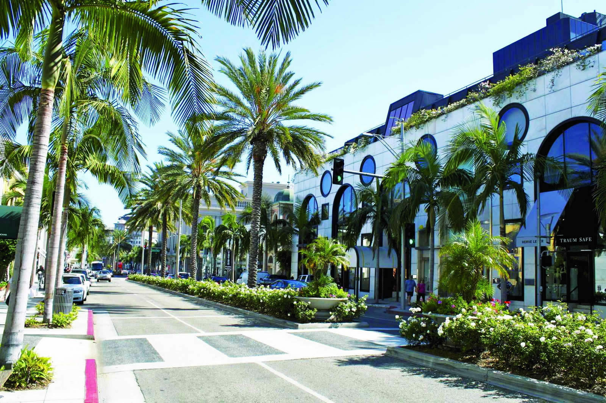
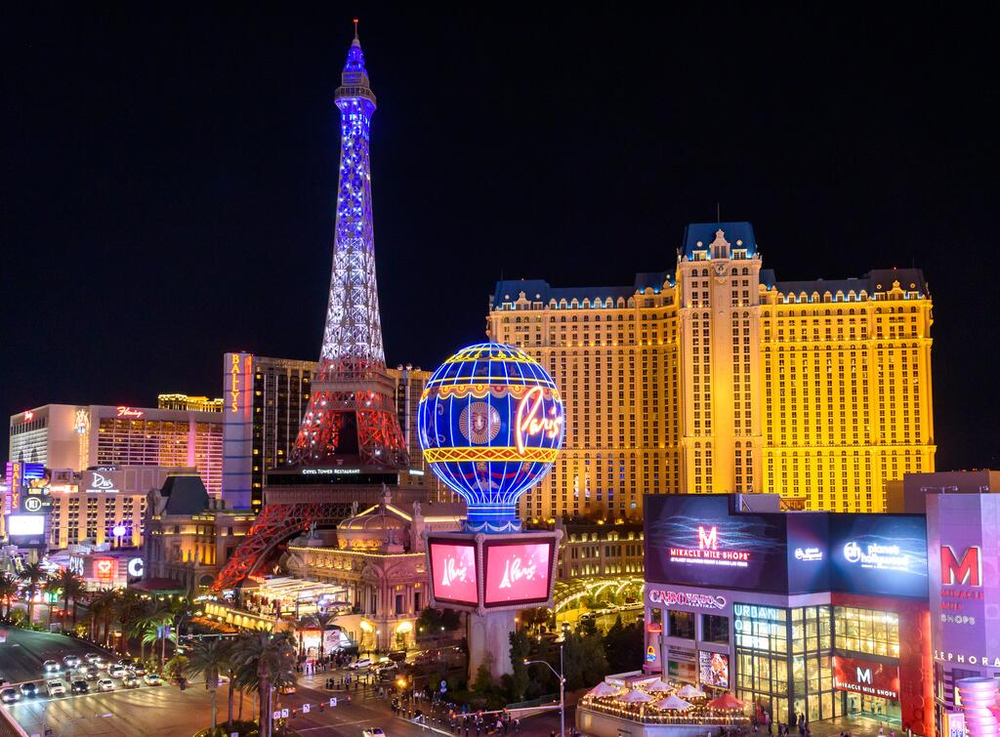
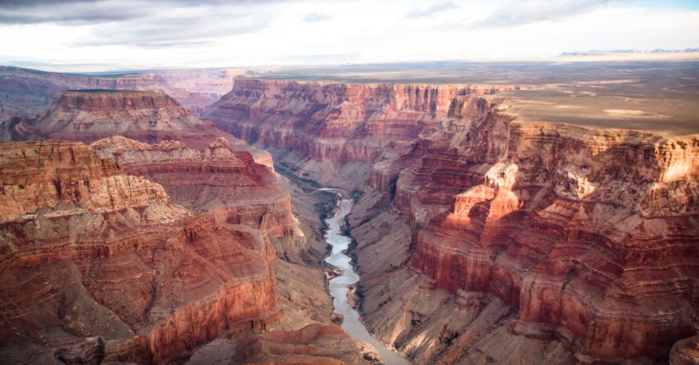
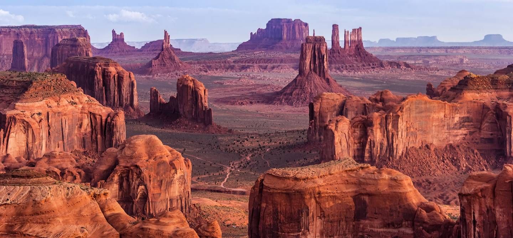
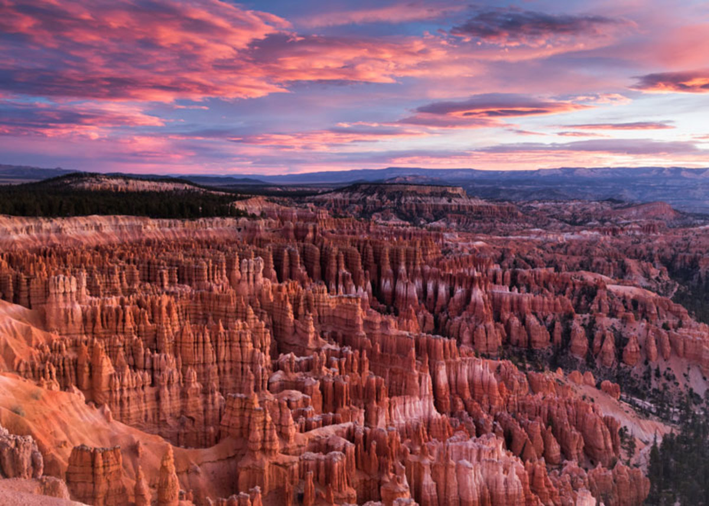
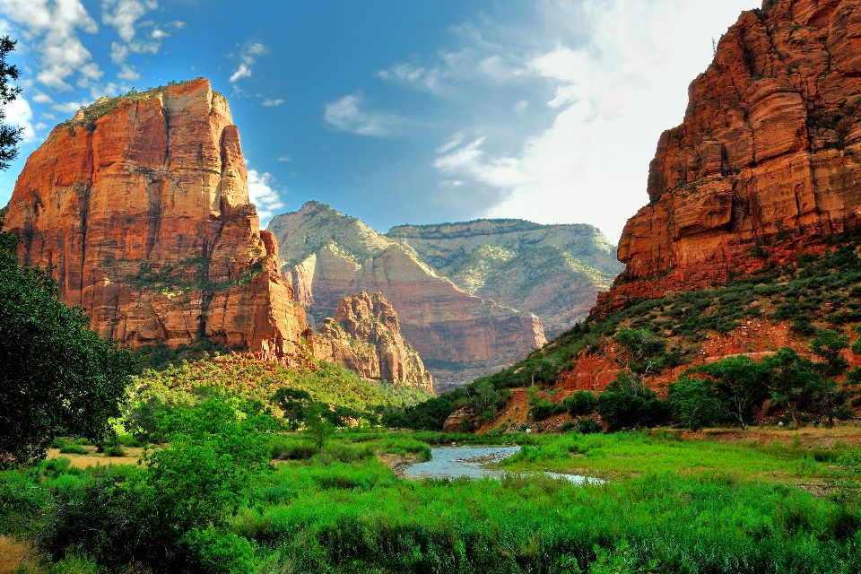
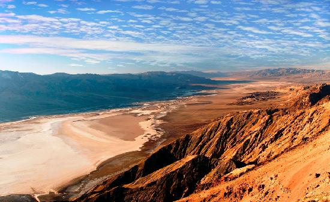
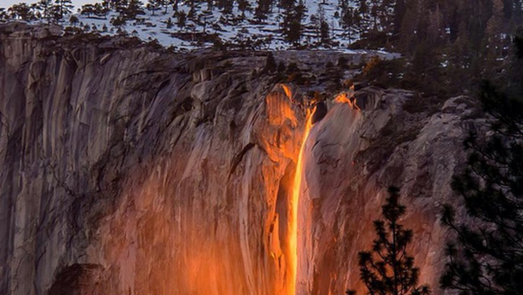
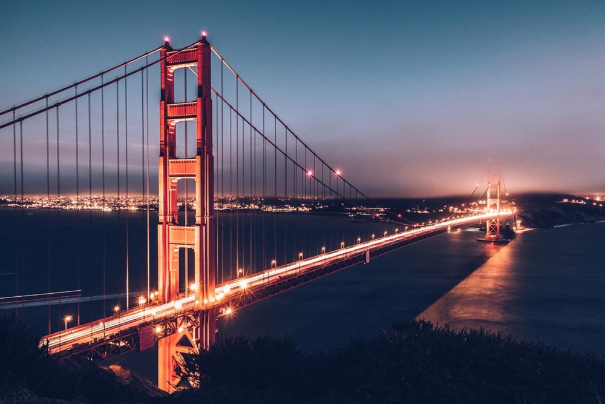

Etats-Unis - Grand Ouest Américain
JOUR 01 et 02 – LOS ANGELES
Arrivés dans la matinée à l’aéroport
Balade dans les canaux de Venice beach
Location vélo pour une balade
Restaurant Beachwood café
Passage à Beverly Hills
Shopping
Randonnée

JOUR 03 – LAS VEGAS
Route, installation à l'hotêl
Casino
Spectacle des fontaines devant le Bellagio
Visite du Neon museum

JOUR 04 et 05 – GRAND CANYON
Visite du village de Seligman
Restaurant Delgadillo’s Snowcap
Desert view road
Tour d’hélicoptère au dessus du Grand canyon

JOURS 06 et 07 – MONUMENT VALLEY
Réserver un tour avec un guide Navajo
Se balader à pied dans la vallée
Balade à cheval comme les cow boys

JOUR 08 et 09 – BRYCE CANYON
Exploration Old Paria Townsite Movie Set
Randonnées dans le Canyon
Balades à cheval

JOUR 10 – PARC NATIONAL DE ZION
Exploration du parc
Randonnée sur la piste des Anges : Angels Landing
Restaurant le Café Soleil

JOUR 11 et 12 – VALLEE DE LA MORT
Dante’s View
Zabriskies Point au lever/coucher du soleil
Scotty Castle
Village fantôme de Rhyolites

JOUR 13 – YOSÉMITE
Cascade Yosemite falls
Balade Vernal falls
Point de vue Tunnel View

JOUR 14 et 15 – SAN FRANCISCO
Hayes Valley et les painted ladies
Otaries sur le Fisherman’s Wharf au pier 39
Lombard Sreet
Visite de la prison Alcatraz
Survol de San Francisco en hélicoptère de 20/30 minutes
Croisière promenade dans la baie de San Francisco
Retour
